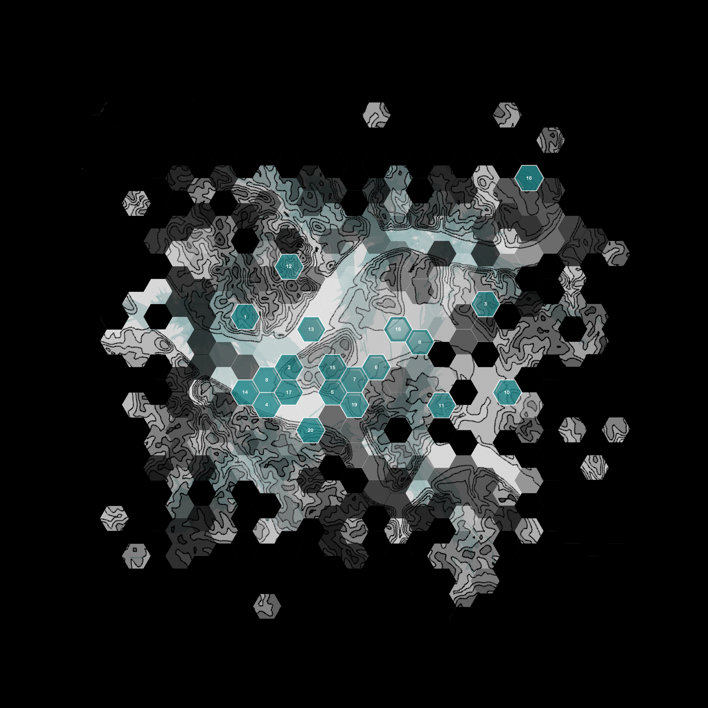

PITTSBURGH / 1970s–1980s
Trace the network.
ROUND 00

Choose any illuminated hexagon to begin.
Address Connection Justice Expression Community Resources
01 / STARTFind your starting point
Select a hexagon on the map. There is no finish line.
The remaining steps turn once.
·+0